The Seven Archons, typically shortened to The Seven, are the seven gods who preside over the seven regions of Teyvat, established after they or their predecessors emerged as the victors of the Archon War 2,000 years ago. Each Archon is associated with an element and an ideal, by which they formed their territories' environment and determined their method of governance over their regions.Each Archon possesses a magic focus called a Gnosis, which allows them to resonate directly with Celestia. By comparison, Visions are "primitive" — though a Gnosis's capabilities and purpose, beyond acting as a symbol of an Archon's status, remain unknown. Each Archon is bound to a Divine Throne, which is composed of the Elemental Authority of one of the Seven Sovereigns, and which grants them authority over the corresponding element.
The Archon War began an indeterminate time in the past, and ended around 2,000 years ago. During this period of time, many gods and archons roamed the land, locked in a bitter struggle for supremacy. It appears that the battles associated with the Archon War are a multitude of local struggles that were grouped together by human history. For example, Barbatos became the first Anemo Archon among The Seven after the death of Decarabian 2,600 years ago, while Morax is implied to have already become Geo Archon by the time the last of the original Seven claimed their title and thus brought an end to the War. The original Seven appeared to be relatively close, sharing a common duty of guiding humanity and often gathering in Liyue for drinks. However, over time, five of The Seven passed away, and some of the newer Archons no longer adhered to the duty of guiding humanity.
500 years ago, the destruction of Khaenri'ah led to forbidden knowledge pollution and the rampage of Rhinedottir's creations, which held the power of the Abyss and ravaged the world of Teyvat. Among those who were perished in the ensuing conflicts were Greater Lord Rukkhadevata, Raiden Makoto, and Egeria. They were subsequently replaced by Lesser Lord Kusanali, Raiden Ei, and Focalors, respectively. The Tsaritsa was also greatly affected by the cataclysm, resulting in a drastic change in her personality. The Seven were summoned to Tunigi Hollow, where the worst outpouring of forbidden knowledge and monsters was occurring. During the battle, Egeria was killed and her body turned into the pool of water known as the Amrita. To preserve the water's purity and tether the god to the mortal realm, Greater Lord Rukkhadevata grew the Harvisptokhm — which serves as a seal over the dark hollow and prevents the corruption from spreading further — from the Amrita. The Oceanids, who served the former Hydro Archon but did not get along with Focalors, made their way to the Harvisptokhm in search of their master. Seeing that her current state was not what they had hoped for, they spread all over the continent and world itself. During this time, the Traveler and their sibling descended on Teyvat and, seeing the chaos, attempted to leave this world, only to run afoul of the Unknown God. While the twins did not meet The Seven during this time, The Seven are aware of them and have been awaiting the Traveler's arrival